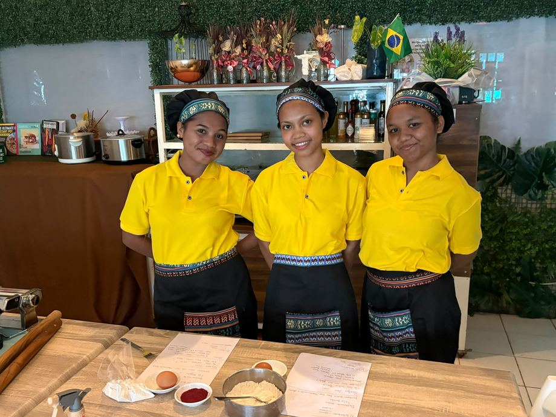

How it all began
One kitchen, two students and a fresh start
The La Farina project was born from the volunteer work of Chef Pollyanna Serrano in Dili, training young Timorese people in vulnerable situations, with intensive daily mentoring for Nélia and Verônica, sharing techniques in baking, fresh pasta and pastry.
For now, while we look for a physical space, we continue to support the girls through orders on WhatsApp and home delivery — and every product sold helps build a new future for young Timorese people through the power of community and good food.